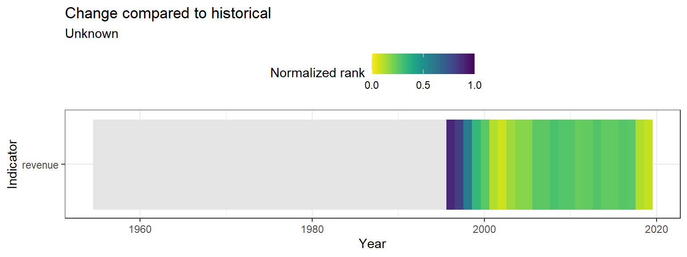
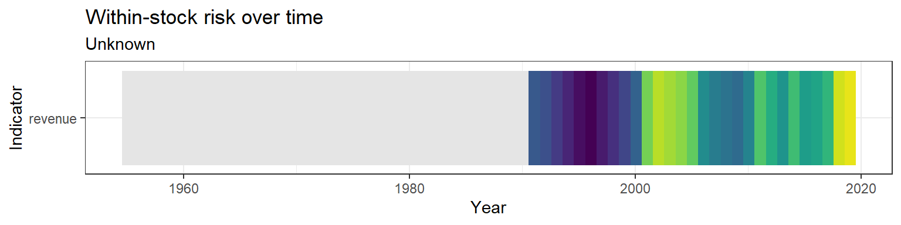

5.3 Revenue
Commercial catch data were downloaded from NOAA FOSS.
5.3.1 Figure

Figure 5.5: Offshore hake
Risk
See Methods for risk calculation details.
Rank of change compared to historical, ranked among stocks

Figure 5.6: Offshore hake
Rank of value (magnitude) compared to other stocks

Figure 5.7: Offshore hake
Rank of value (magnitude) within a single stock, compared to all years

Figure 5.8: Offshore hake
5.3.2 Data
(#fig:revenue_data)Offshore hake